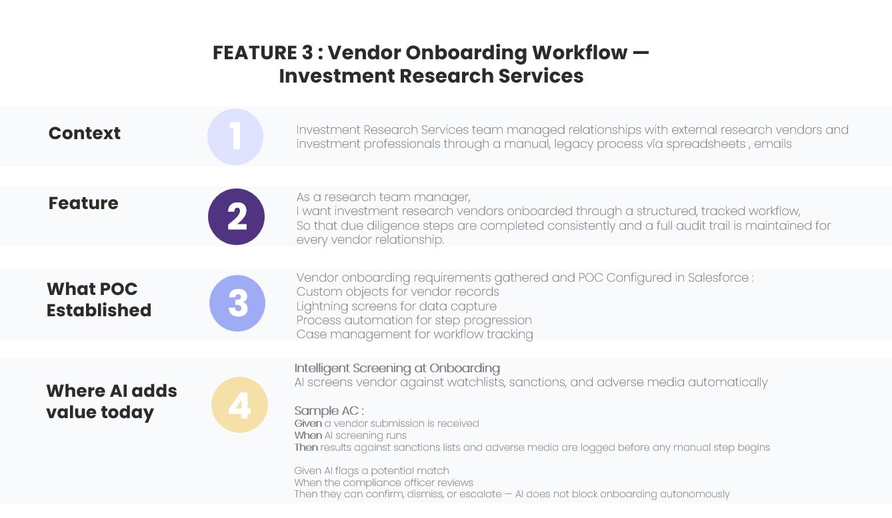

Vendor Onboarding Workflow — Investment Research Services
Investment Research Services · Real TPO work, from my time as Technical Product Owner
Overview
As Technical Product Owner, I gathered requirements and scoped a Salesforce proof of concept to replace a manual, spreadsheet-and-email vendor onboarding process for the Investment Research Services team — plus how I'd extend that workflow with AI-driven screening today.
The Challenge
The Investment Research Services team managed relationships with external research vendors and investment professionals through a manual, legacy process built on spreadsheets and emails. There was no structured, trackable way to ensure due diligence steps were completed consistently, or to maintain an audit trail for every vendor relationship.
Approach
I gathered the vendor onboarding requirements and scoped the Salesforce POC as Technical Product Owner:
- Defined the feature as a user story: as a research team manager, I want investment research vendors onboarded through a structured, tracked workflow, so that due diligence steps are completed consistently and a full audit trail is maintained for every vendor relationship
- Gathered vendor onboarding requirements from the research team
- Configured the POC in Salesforce: custom objects for vendor records, Lightning screens for data capture, process automation for step progression, and case management for workflow tracking
- Scoped where AI-driven screening could extend the workflow, and wrote sample acceptance criteria for it
Screenshots

Where AI Adds Value Today
Intelligent screening at onboarding: AI screens each vendor against watchlists, sanctions, and adverse media automatically, before any manual step begins.
Sample acceptance criteria
- Given a vendor submission is received, when AI screening runs, then results against sanctions lists and adverse media are logged before any manual step begins
- Given AI flags a potential match, when the compliance officer reviews, then they can confirm, dismiss, or escalate — AI does not block onboarding autonomously
Key Artefacts
- User story and acceptance criteria for the structured onboarding workflow
- Salesforce POC: custom objects, Lightning screens, process automation, case management
- Sample acceptance criteria for AI-driven vendor screening
Outcome / Impact
Delivered a working Salesforce POC that replaced a manual, spreadsheet-and-email process with a structured, tracked workflow — giving the research team a consistent due diligence process and a full audit trail for every vendor relationship. Demonstrates scoping a workflow product from a real operational pain point through to a working POC, plus how I'd extend it with AI-driven screening while keeping a human in the loop for any flagged decision.
What I Learned
Translating "due diligence should be consistent" into a structured Salesforce workflow taught me how much of process automation is really about defining the right checkpoints — what gets tracked, what triggers the next step, and what needs a full audit trail. Designing the AI-screening acceptance criteria on top of that reinforced the same principle I took from the transaction decisioning work: AI can automate the screening step, but the acceptance criteria still have to define who's accountable when it flags something — the compliance officer, not the AI, decides.